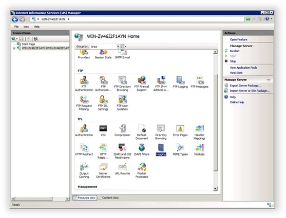

Configuring Windows 2008 Web Server
Translations:
Configuring IIS 7 Logging
In order to collect and analyze website traffic in WebsitePanel, you must enable logging in IIS. By default, logging in the correct format is already enabled, but some important options are not enabled.
In IIS Manager, click the server name node.

In the IIS section, click Logging and then click Select Fields.
Select the Bytes sent and Bytes received options and then click OK.
Creating a Default FTP Site
In order to manage files and folders on your server from a FTP client, you must configure a default FTP site. All FTP accounts will then be created under this FTP site. (This procedures assumes that FTP Services 7.5 were installed earlier using the Web Platform Installer.)
In Windows, open Administrative Tools > Computer Management, click Local Users and Groups, and then select the Groups node.
Add a new group named WSPFtpUsers.
In Windows Explorer, navigate to the c:\inetpub folder. Create a new subfolder named ftproot. For this folder, grant Read permissions to the WSPFtpUsers group.
Open IIS Manager and expand the Sites node.
In the Actions pane, click Add FTP Site.
Specify the FTP site name and root folder path, then click Next.
Specify FTP site bindings and select No SSL so that clients can use FTP protocol rather than FTPS. If you decide to set up an SSL certificate and use FTPS protocol, you can change this setting.

Click Next.
Select Basic for authentication and grant Read access to the WSPFtpUsers group. Click Finish to create the FTP site.
Select the Default FTP Site node and then click the FTP User Isolation icon.
Switch isolation mode to User name directory and then click Apply.
Disabling Password Complexity Policy
To disable password complexity policy, open the Local Security Settings manager (Start > Administrative Tools), expand Account Policies, and then expand Password Policy. Set the Set Password must meet complexity requirements policy to Disabled.